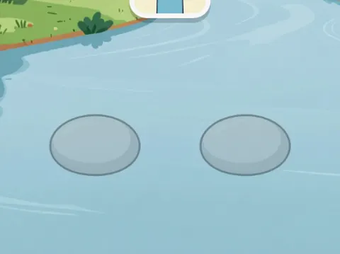
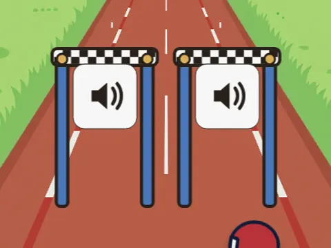
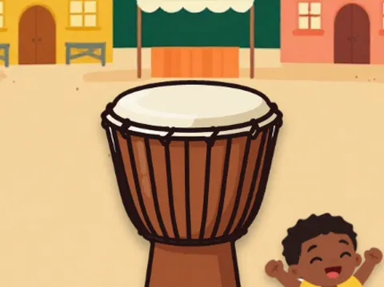
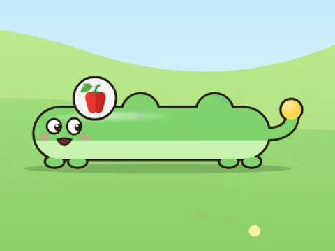
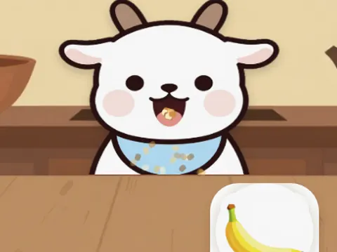
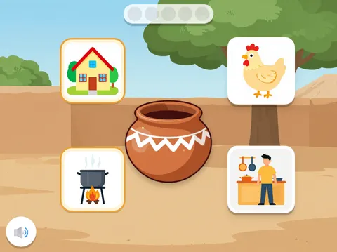
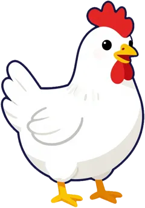

Play Nigeria!
Free listening games for young Yorùbá learners: the first step towards an open-source app in many Nigerian languages.

A path through the day
Short sessions through scenes from a child's day, a few new words at a time.
- No reading needed
- Wrong answers teach, never scold
- Every word spoken by a Yorùbá speaker
Or pick a game
Sounds and syllables

River CrossingHear a word, then hop the frog across the river, one stone per syllable.
Gate RallySteer your kart through the gate that matches what you heard.
Beat the DrumDrum the word out, one beat per syllable, and the drum says it back.
Stretchy WordStretch a word creature and it says itself slowly, a syllable at a time. Word TrainCouple the carriages in order and the train says the word.
Word TrainCouple the carriages in order and the train says the word.
Words and meanings
 Tickle the GiantThe giant names a body part: tickle him there.
Tickle the GiantThe giant names a body part: tickle him there.
You're Hungry!A hungry goat asks for a food. Feed it the right one. Hide and SeekA voice calls an animal: find the one hiding in the yard.
Hide and SeekA voice calls an animal: find the one hiding in the yard. Fishing with GrandmaGrandma asks for something: catch the fish that calls its name.
Fishing with GrandmaGrandma asks for something: catch the fish that calls its name. Silly ParrotThe parrot names a picture. Is it right, or silly?
Silly ParrotThe parrot names a picture. Is it right, or silly? Wake the HouseWake each sleepy thing in the house and hear its name. No wrong answers.
Wake the HouseWake each sleepy thing in the house and hear its name. No wrong answers. Who Came to Visit?Guests wait at the door: let in the one whose name you hear.
Who Came to Visit?Guests wait at the door: let in the one whose name you hear.
Put It TogetherTwo words you know go into the pot. Which picture comes out?
Do what the words say


Show you understand


Who does what

For readers


This is a trial run
Tell us what worked and what didn't. It shapes the full app.
- NowExperimental Yorùbá games
- NextThe same games in Igbo and Hausa
- ThenAn open-source app for all platforms, in many Nigerian languages

Bring these games to your language
Volunteers will carry these games into Igbo, Hausa and beyond. One dedicated volunteer can start a whole language.
- Voices record words and sentences
- Translators bring the words into a new language
- Checkers make sure spellings, tones and pictures are right
- Builders make and improve the games